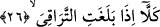

“kesin bilgi” (yakıyn) anlamına almışlardır. Bu açıklama -bâzılarının zannettiği gibi- az
sonra gelecek olan en el-masdariyye/masdar en’i ile çelişmez. Çünkü masdariyet “en”i
sırf tahakkuk ve kesinlik bildiren fiilden sonra gelmez. Buna karşılık “zan” fiilinden
sonra ya da ilim ve bilgi mânâsını veren fiilden sonra masdariyet en’i, şeddeli enne ve
şeddesiz en gelebilir. Nitekim er-Rızâ bunu açıkça söyler.
Âyette yer alan “fâkıra” bel kemiğini kıran büyük bir musîbet demektir. Kelimenin
yapı ve kökünde var olan “kırma” anlamından dolayı hiçbir şeyi olmayan yoksula -
Arapçada- “el-fakîr” denmiştir. “Fakr” insanın bel kemiğini kırmak demektir. Fakirlik
de insanın bel kemiğini kırar, onu başkalarına muhtaç bırakır. Fakîre “bel kemiği kırık”
denmesi, onun şiddetli bir ihtiyaç içinde bulunması ve hiçbir şeye tahammül etmeye
gücünün olmamasından kinâye anlatımıdır. Biz âyete geri dönersek yukarda zikredilen
asık suratlı münâfık ve kâfirler -tıpkı parlak yüzlü olan müminlerin kendilerine her türlü
hayrın yapılmasını umdukları ve bekledikleri gibi- kendilerine verilecek cezâyı
beklerler. Bunu iki âyetin birbirine mukabil olarak getirilmesinden çıkarıyoruz. Çünkü
karşı karşıya zikredilen iki âyetin anlamca gereği budur.
Bâzıları şöyle demiştir: En doğrusu şudur ki belâ, Rabbü’l-erbâb’ın müşâhedesinden
perdeli olmaktır.
Cihânda ayrılıktan daha kötü bir belâ ve musîbet yoktur.
et-Tevilâtü’n-necmiyye’de bu âyet ve devamı şu şekilde tefsir olunur: “Yüzler vardır
ki o gün ışıl ışıl parıldayacaktır, Rablerine bakacaklardır.” Rablerinden başkasına
bakmayacaklardır. Çünkü onlar bu günde dünyadan yüz çevirmişler ve Allah’a
yönelmişlerdir. “Yüzler de vardır ki o gün asık olacaktır. Bilirler ki bel kemiklerini
kıracak bir musîbete uğratılacaklar”: Bugün dünyaya yönelmeleri ve Allah Teâlâ’dan
yüz çevirmeleri sebebiyle amellerine uygun bir karşılık olarak bel kemiklerini kıracak
bir musîbete uğratılacaklarını bilirler.
Bâzı âlimlere göre “yüzler vardır ki o gün ışıl ışıl parıldayacaktır” âyet-i
kerîmesinin mânâsı; yüzler vardır kuds nûru ve nur, sürur, ebedî nimet âlemine bitişme
sebebiyle aydınlandığı için pırıl pırıl parıldayacaktır. Yüzler de vardır ki o gün asık
olacaktır. Yâni hey’etlerinin çirkinliği ve üzerlerinde bulunan cahîm, ateşin
zulmeti/karanlığı ve orada gördükleri korkunç durum ve kötü komşu nedeniyle asık
olacaklardır.
26. Artık gözünüzü açın! Ne zaman ki can köprücük kemiğine dayanır,
“Hayır, hayır” sizler dünyayı âhirete tercih etmekten vazgeçin, önünüzde ölüm var.
Ona karşı dikkatli olun, bu ölüm sizinle dünya arasındaki ilişkiyi keser.
“Can ne zaman köprücük kemiklerine dayanır” Köprücük kemiğine dayanacak olan